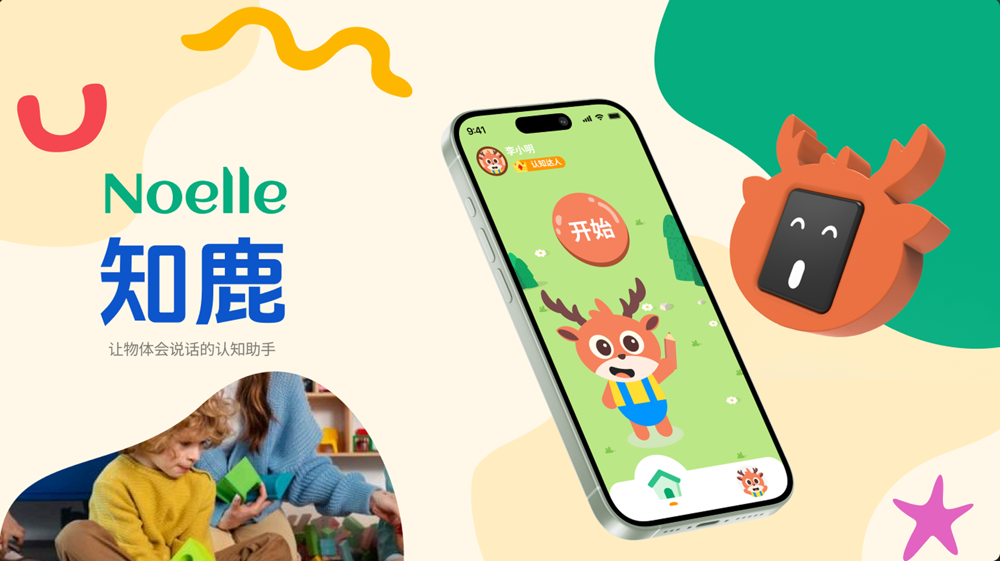
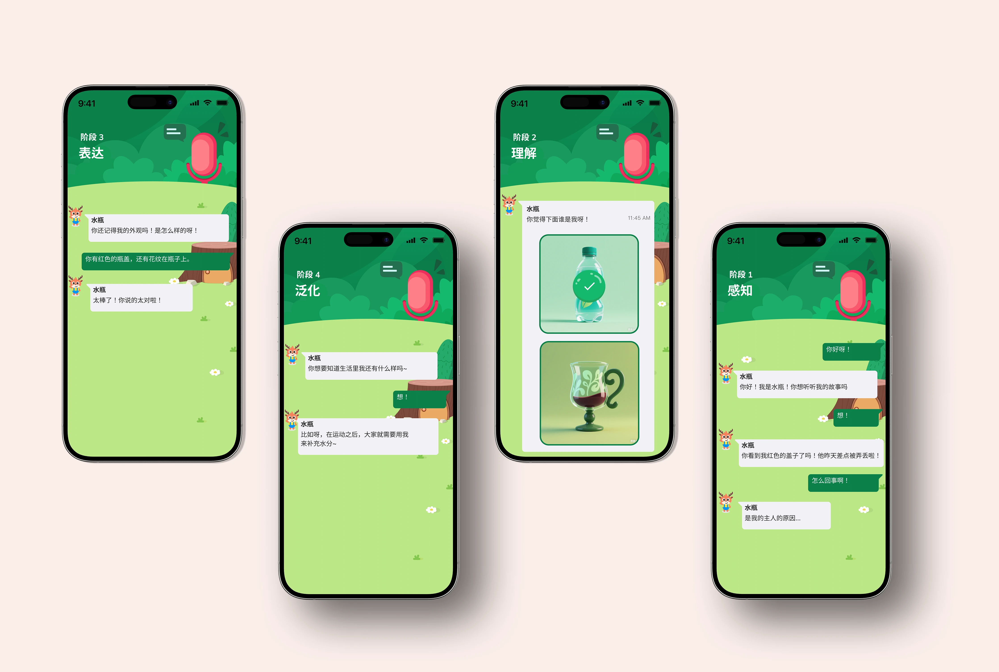
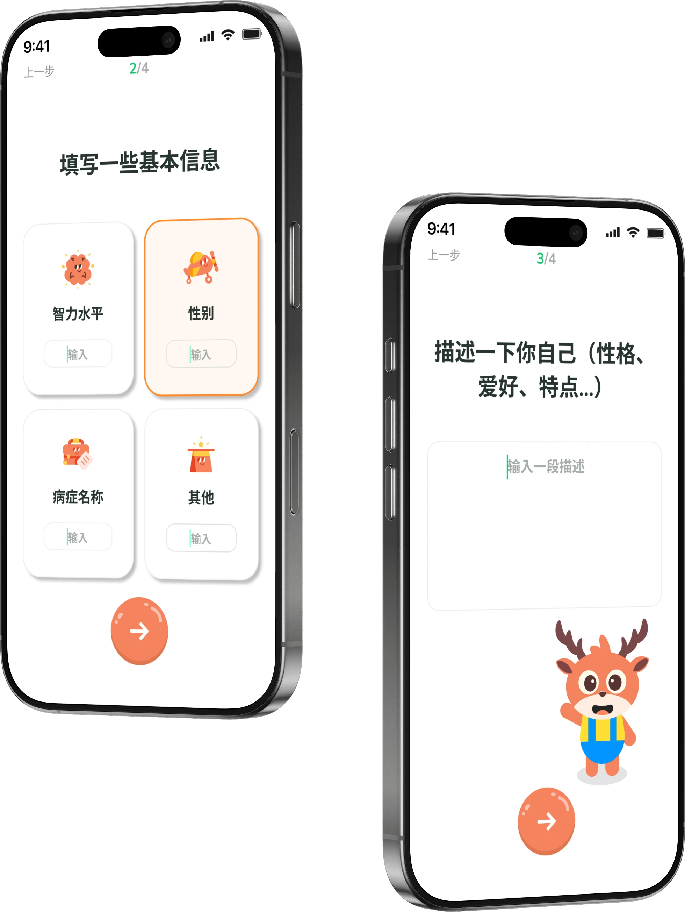
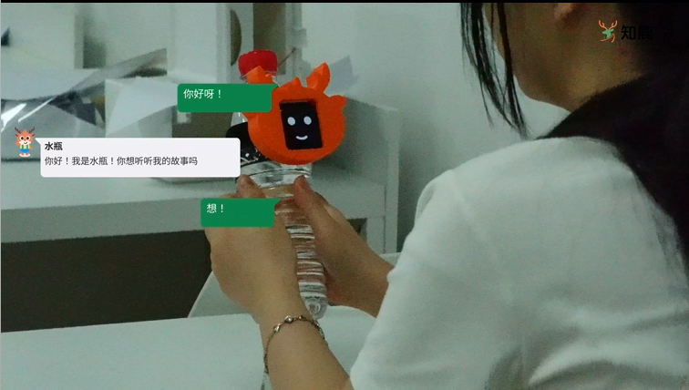
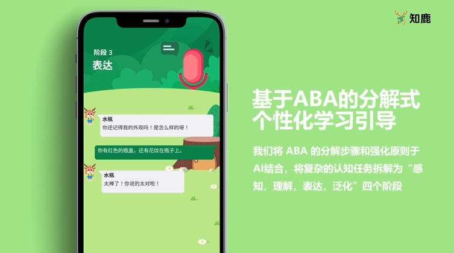

抽象材料难迁移
平面教材很难建立“图像—实物—用途”的完整联系。
COGNITIVE LEARNING / 2025
NOELLE — THE OBJECTS CAN TALK
一套面向有认知训练需求儿童的互动学习概念：让真实物品成为会对话的学习伙伴，连接孩子、教师与日常世界。
进入设计故事
最初的方案依赖桌面调研与屏幕内容。走进杭州杨绫子学校后，我们发现二维卡片与真实物体之间仍有一道抽象门槛：看到图片、说出词语，并不一定意味着孩子能在生活里认出、使用它。
平面教材很难建立“图像—实物—用途”的完整联系。
有效训练依赖一对一引导、重复练习和即时鼓励。
认知水平与兴趣差异大，训练路径需要个性化调整。
从“再做一款练习 App”，
转向让真实物品参与学习。
我们将 ABA 的任务分解、辨别、强化与应用原则，转译为“感知—理解—表达—泛化”四个连续阶段。每一步都有清晰目标，也为孩子留出探索空间。
点击阶段，探索交互逻辑 ↓将技能拆成更小的单元，由小鹿带孩子观察生活中的实物，建立第一层感知联系。
通过物体识别与选择任务，帮助孩子辨别目标物品与干扰项，把词语和眼前的实物连接起来。
小鹿以语音和表情引导孩子描述物体；正确回应得到鼓励，让“表达”成为愿意继续的互动。
把练习延伸到生活场景，让孩子从认识一个物品，逐步走向理解它的用途。

设计并非从一个“开始”按钮开始。它先了解孩子，再唤醒物体，通过对话完成训练，最后将进展变成教师与家长可回看的记录。
输入认知水平与兴趣，为后续内容确定起点。

视觉识别触发互动，让眼前的物品成为学习内容。

语音、屏幕与触觉反馈共同引导儿童完成阶段任务。

训练时长与正确率被整理成可回看的进展，帮助照护者理解孩子的学习路径。
小鹿装置以硅胶绑带附着在日常物品上，用拟人化表情与声音让静态物品获得“性格”。装置与 App 共同承担训练引导，而不是把所有注意力留在手机里。
MEET NOELLE · THE PROJECT FILM
从课堂观察到可回应的物体，观看知鹿项目影片，感受这套学习体验的整体构想。
把 ABA 框架转成具体交互流程，并根据实地研究定义核心功能需求。
与特教学校合作、访谈教师并观察课堂后，团队把纯软件方向调整为“真实物体 + 装置 + App”的组合。
若继续迭代，计划更早访谈家长，研究课堂以外的练习与反馈如何衔接。
课程项目 · 互动学习系统概念设计